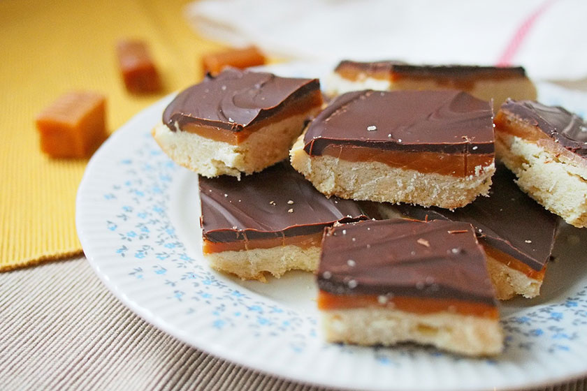

Recept
-
Tészta:
- 11 dkg vaj
- 1 tk vaníliakivonat
- 1 csipet só
- 6 dkg porcukor
- 14 dkg liszt
-
Csokoládé:
- 12 dkg étcsokoládé
- 1 tk olaj
- Melegítsük elő a sütőt 180 fokra. Béleljünk ki sütőpapírral egy 20x20 centis jénait vagy egy ugyanekkora tepsit. Nem elég kivajazni a formát, ugyanis könnyen beleragad a tészta alja, mindenképp használjunk sütőpapírt. A vajat kockázzuk össze, majd keverjük krémesre a cukorral robotgép segítségével. Adjuk hozzá a vaníliát, keverjük el benne. A lisztet szitáljuk át, keverjük össze a sóval, majd adjuk a vajas-cukros keverékhez. Eleinte fakanállal keverjük, majd kézzel gyúrjunk belőle tésztát. A sok vaj miatt ragacsos lesz, de ez nem baj, szépen össze fog állni. Nyomkodjuk a tésztát az előkészített tepsibe/jénaiba, egyenletesen oszlassuk el, hogy mindenhova jusson belőle. Toljuk a sütőbe, 17 percig süssük, míg a szélei és az alja aranybarna nem lesz. Hagyjuk teljesen kihűlni, mielőtt a karamellt ráöntenénk.
- Ha a karamell megszilárdult, készítsük el a csokimázat. Törjük darabokra az étcsokoládét, majd tegyük egy hőálló tálba. Helyezzük vízgőz fölé, majd kevergetve melegítsük. Mikor elkezd olvadni, adjunk hozzá 1 teáskanál olajat, majd addig kevergessük, míg teljesen folyékony nem lesz. Ha kész, öntsük a karamellre. Hagyjuk teljesen megszilárdulni, tegyük a hűtőbe 1-2 órára, mielőtt szeleteljük.